InternSVG: Towards Unified SVG Tasks with Multimodal Large Language Models
Abstract
Vector graphics, represented in Scalable Vector Graphics (SVG) format, serve as a core medium for digital design and web rendering. Existing works on SVG tasks often focus on isolated subtasks such as generation, editing, or understanding. In this paper, we propose InternSVG, a unified framework based on multimodal large language models that jointly addresses SVG-related tasks across perception and creation. By representing SVGs as structured sequences and aligning them with textual descriptions and raster renderings, InternSVG enables a generalizable interface for vector reasoning, generation, and manipulation. Extensive experiments demonstrate its versatility and performance across diverse SVG benchmarks.
SAgoge: A Comprehensive Multimodal SVG Dataset
We introduce SAgoge, a large-scale and comprehensive dataset for SVG tasks with more than 16 million training samples spanning icons, illustrations, chemical structures, and animations.
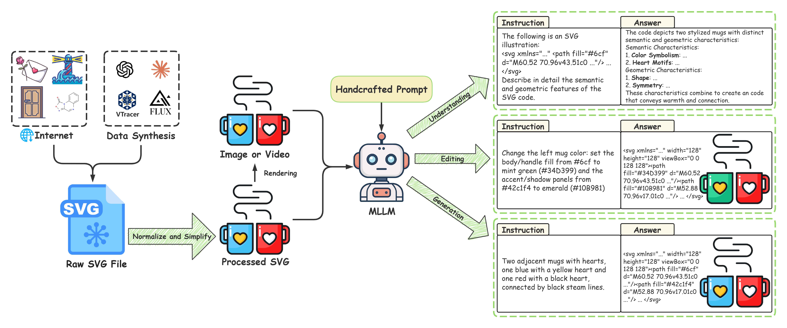
Raw SVGs are gathered from the web and a custom synthesis pipeline, then normalized to a 128 × 128 canvas and simplified to shorten code. The rendered images or videos, processed SVG code, and handcrafted prompts are fed to an MLLM to synthesize high-quality training samples for understanding, editing, and generation.
InternSVG: A Unified MLLM for SVG Understanding, Editing, and Generation
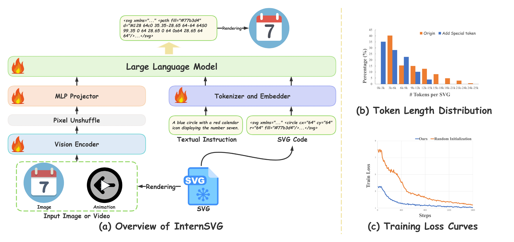
InternSVG follows the “ViT–MLP–LLM” paradigm , using InternViT-300M as the vision encoder and Qwen2.5-7B as the language model. We further design SVG-specific special tokens and introduce a tailored embedding initialization strategy to incorporate SVG content effectively.
See InternSVG in Action!
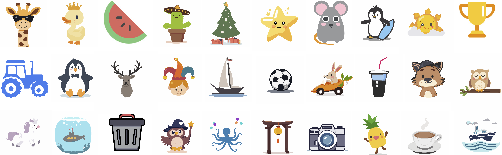
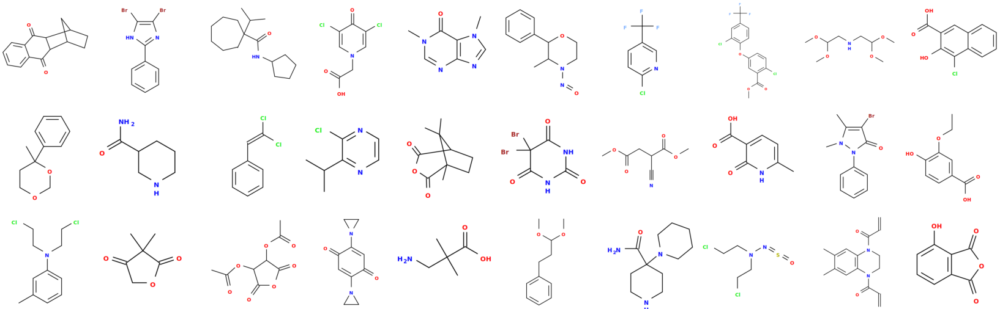
SArena: A Companion Benchmark
To enable systematic evaluation across SVG understanding, editing, and generation, we introduce SArena, a benchmark that aligns with the domains and difficulty spectrum covered by SAgoge and provides standardized tasks and metrics.SArena includes 4 sub-benchmarks, i.e., icons, illustrations, chemical structures, and animation.
SArena-Icon
Comparison of SVG generation performance.
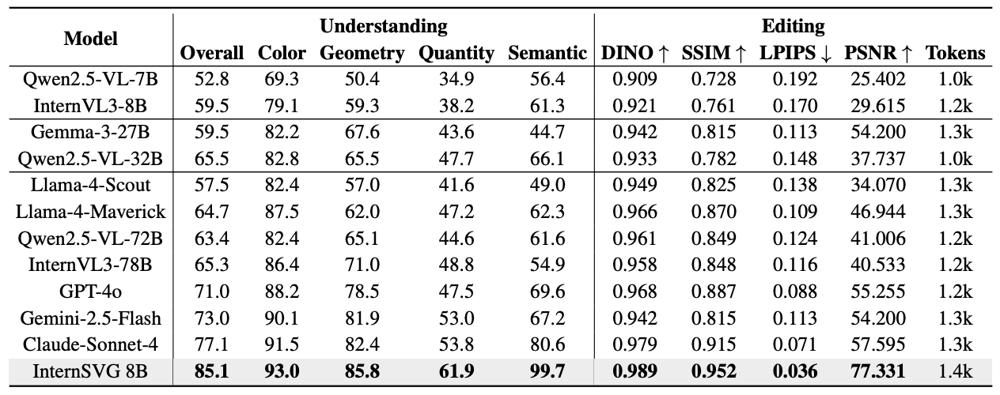
Comparison of SVG understanding and editing performance.
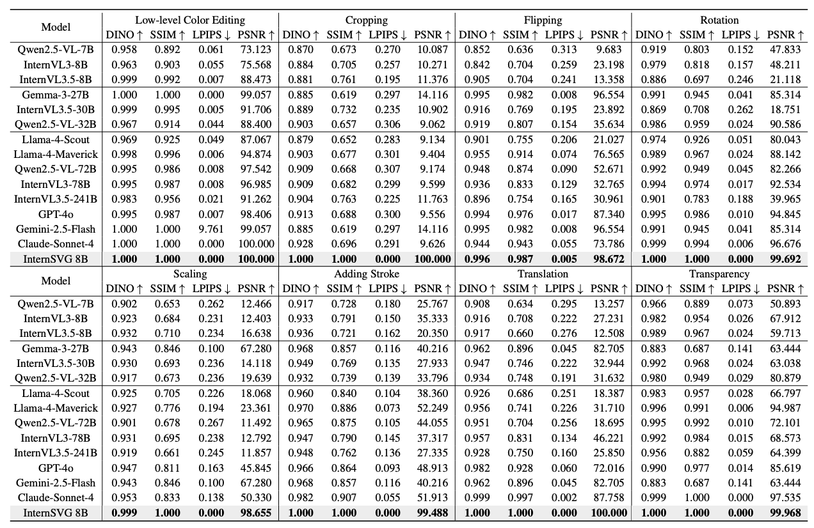
Comparison of SVG editing performance across 8 simple subtasks.
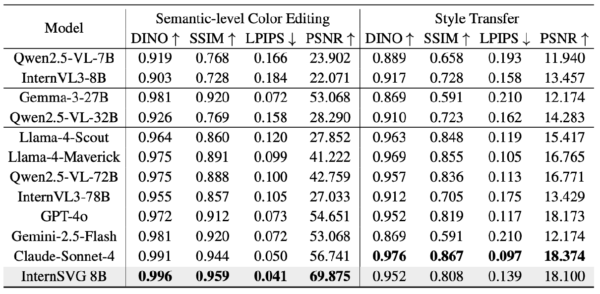
Comparison of SVG editing performance across 2 hard subtasks.
SArena-Illustration
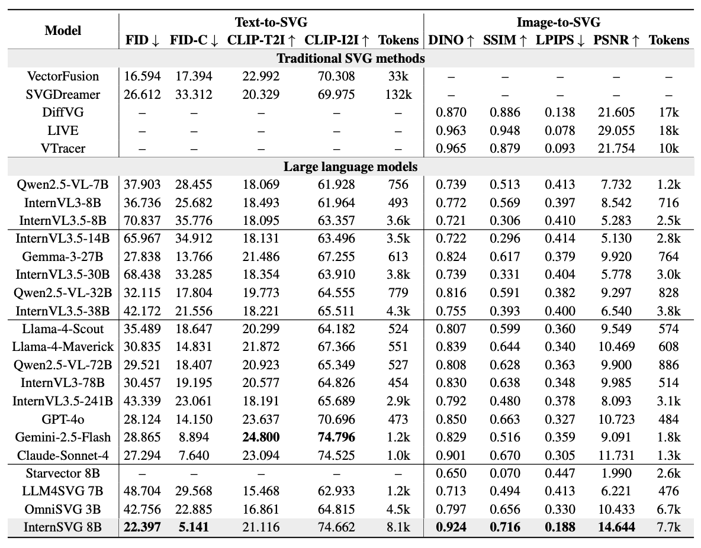
SArena-Chemistry
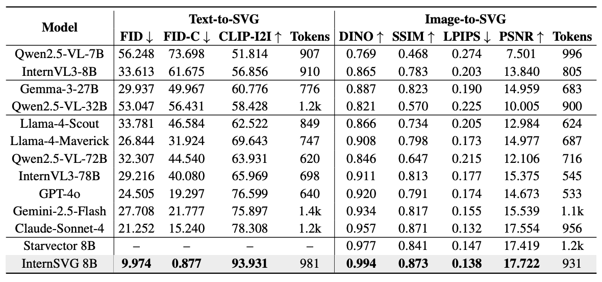
SArena-Animation
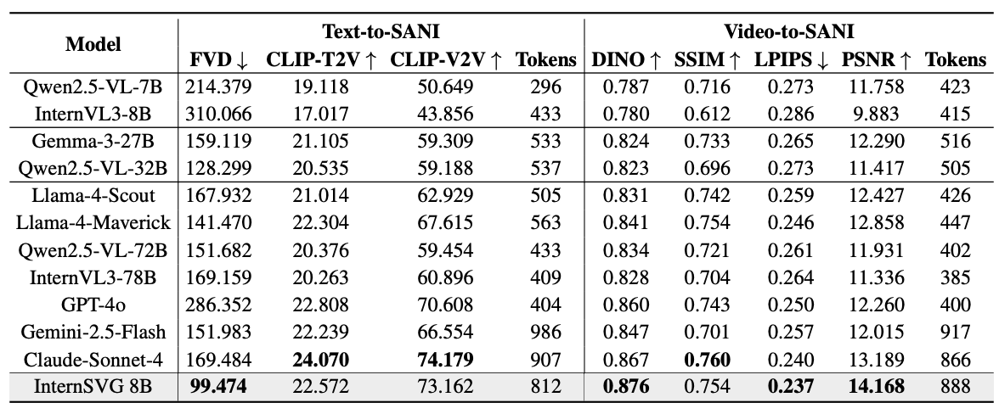
SGP-Bench
To further validate the effectiveness of SAgoge in enhancing model capabilities for SVG modeling, we conduct comparative experiments on SGP-Bench, a benchmark specifically designed to evaluate semantic and structural understanding of symbolic graphic programs.
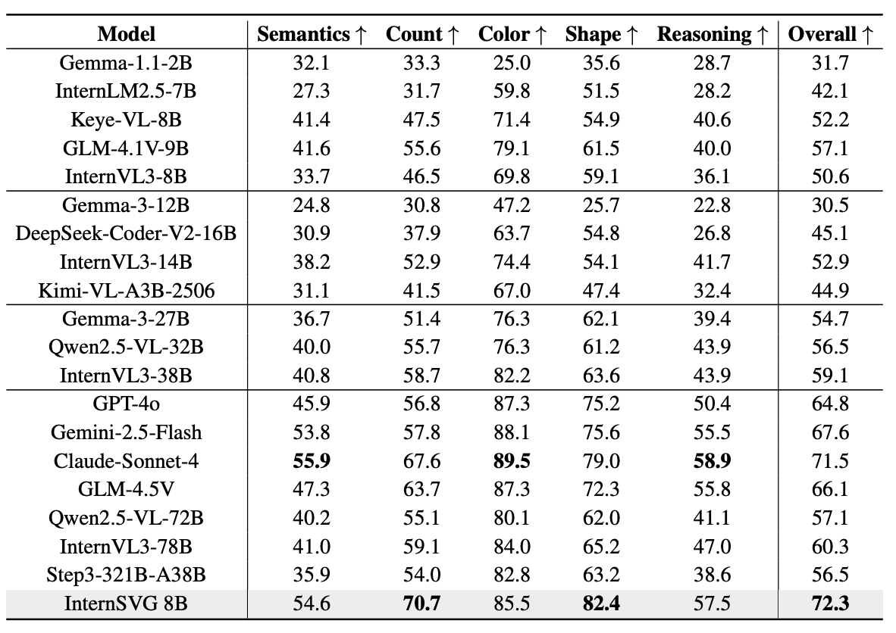
Comparison with Baselines
We compare the generated SVGs with those produced by baseline methods to assess visual quality.
SArena-Icon
Text-to-SVG
Image-to-SVG
SArena-Illustration
Text-to-SVG
Image-to-SVG
SArena-Chemistry
Text-to-SVG
Image-to-SVG
SArena-Animation
Text-to-SVG

Image-to-SVG
BibTeX
@article{wang2025internsvg,
title={InternSVG: Towards Unified SVG Tasks with Multimodal Large Language Models},
author={Wang, Haomin and Yin, Jinhui and Wei, Qi and Zeng, Wenguang and Gu, Lixin and Ye, Shenglong and Gao, Zhangwei and Wang, Yaohui and Zhang, Yanting and Li, Yuanqi and Guo, Yanwen and Wang, Wenhai},
journal={arXiv preprint arXiv:2501.xxxxx},
year={2025}
}